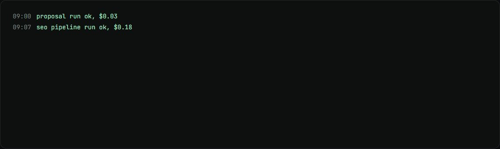
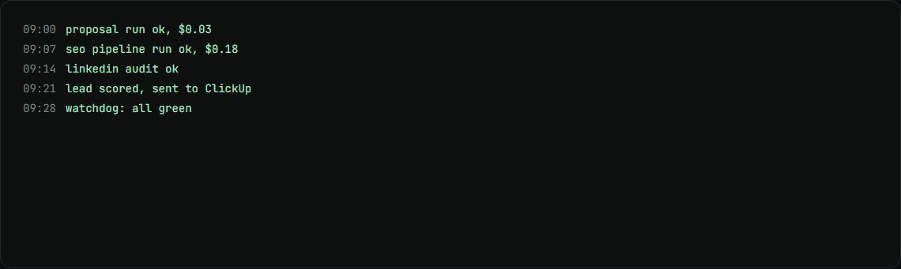

n8n fleet and ops dashboard
Every Soch workflow reports its runs and AI cost to one live dashboard.
my role I run the fleet, and built the telemetry and the dashboard: 73 of 73 dashboard commits.
The problem
With dozens of workflows across sales, content and SEO, nobody could see at a glance which ones ran, which failed and what they cost.
How it works
- Each workflow ends with a call that logs the run and its token use to an Apps Script endpoint.
- Runs and AI costs land in Google Sheets, per model and per call.
- The dashboard reads them every 30 seconds and shows health, failures and spend.
- A public catalog lists every workflow, generated from the live n8n API.
What changed
- 44active workflows
- $55AI spend a month for the whole fleet
- 885token rows logged in the first three weeks
What I built
- The telemetry pattern added to every workflow.
- The ops dashboard and the public workflow catalog.
- Measured cost per run for each workflow.
Stack
- n8n
- Apps Script
- Google Sheets
- JavaScript
- GitHub Pages
Stills

